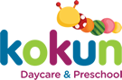
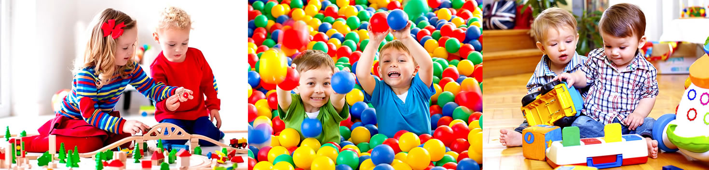

<!DOCTYPE html><html lang="es"><head><meta charset="utf-8"/><meta name="viewport" content="width=device-width, initial-scale=1"/><title>guarderia | kinder | after school</title><meta name="keywords" content="guarderia, kinder, after school, kinder"><meta name="description" content="guarderia, kinder, after school, el kinder y after school de kokun es el kinder con mas seguridad el after school apoya a los padres de los niños que trabajan, para un buen kinder el kinder de kokun, con el after school con talleres el kinder en reforma con after school un kinder que tenga after school es lo que los padres necesitan, el kinder con after school un kinder para todos"><link rel="canonical" href="http://kokundaycare.com.mx/guarderia.html"><link rel="stylesheet" href="https://cdnjs.cloudflare.com/ajax/libs/bulma/0.5.1/css/bulma.min.css"/><link rel="stylesheet" href="https://maxcdn.bootstrapcdn.com/font-awesome/4.7.0/css/font-awesome.min.css"/><link rel="stylesheet" href="https://cdnjs.cloudflare.com/ajax/libs/slick-carousel/1.7.1/slick.min.css"/><link rel="stylesheet" href="https://cdnjs.cloudflare.com/ajax/libs/slick-carousel/1.7.1/slick-theme.min.css"/><link rel="stylesheet" href="https://cdnjs.cloudflare.com/ajax/libs/fancybox/3.1.20/jquery.fancybox.min.css"/><link rel="stylesheet" href="https://fonts.googleapis.com/css?family=Poppins:300,400,700"/><link rel="stylesheet" type="text/css" href="app/app.css"/><link rel="icon" type="image/png" href="favicon.png"/></head><body><div class="topbar"><div class="columns"><div class="column"><span class="slogan">Guardería en Polanco</span><span class="topbar-text"><a href="tel:68205500"><i class="fa fa-phone"></i><span>+52 (55) 6820 5500</span></a></span><span class="topbar-text"><a href="mailto:info@kokundaycare.com.mx"><i class="fa fa-envelope"></i><span>info@kokundaycare.com.mx</span></a></span></div></div></div><section class="section"><div class="container"><div class="navbar"><div class="navbar-brand"><a href=""></a><div class="navbar-burger" data-target="#mainMenu"><span></span><span></span><span></span></div></div><div class="navbar-menu" id="mainMenu"><nav class="navbar-end"><a class="navbar-item" href="daycare-preschool.html">Nosotros</a><a class="active navbar-item" href="guarderia.html">Servicios</a><a class="navbar-item" href="playgroups.html">Playgroups</a><a class="navbar-item" href="educacion-infantil.html">Educación</a><a class="navbar-item" href="talleres-infantiles.html">Kokun Kids</a><a class="navbar-item" href="cuidado-infantil.html">Contacto</a></nav></div></div></div></section><div class="container"><div class="notification is-orange has-text-centered">SOBRE NUESTROS SERVICIOS</div></div><section class="section"><div class="container"><div class="columns"><div class="column is-6 is-offset-3"><h2 class="has-text-centered text-blue">Trabajamos juntos desde hace 7 años en Kokun Daycare Río Rhín...</h2></div></div><div class="columns"><div class="column is-5 is-offset-1"><p>Nos fusionamos con Aprendo Jugando AC consolidando así 43 años de experiencia, ofreciendo el mejor programa en educación temprana y preescolar abriendo así nuestra segunda sucursal en Polanco. Ofrecemos, cada vez a más niños, un lugar donde pueden crecer, jugar y aprender rodeados de amor</p><h4 class="text-purple mt mb is-size-5">“Amplia Experiencia en Educación Temprana y Prescolar”</h4></div><div class="column is-5"><p>Kokun es un lugar altamente confiable, que provee consistentemente servicios de calidad a las familias y donde los niños son respetados en su desarrollo y fortalecidos en todas sus capacidades.</p><h4 class="text-blue mt mb is-size-5 has-text-centered">“Somos un equipo que ofrece la más altacalidad en Educación Temprana inicial y Prescolar en el desarrollo”</h4><p>de niños emocional y cognitivamente íntegros, contribuyendo en la formación de las bases fundamentales de un ser humano creativo y responsable de su entorno.</p></div></div></div></section><section class="section is-green"><div class="container"><div class="columns"><div class="column"><h2 class="text-white">Los servicios que Kokun ofrece son</h2></div></div></div><div class="columns mt2"><div class="column is-10 is-offset-1"><div class="columns"><div class="columns"><div class="column is-4"><div class="card kokun-card"><a class="card-image" href="guarderia.html"><figure class="image"><div class="hovertext is-blue"><p class="is-size-3">Day Care</p></div></figure></a><div class="card-content has-text-centered"><p class="is-size-3 text-blue">DayCare</p></div></div></div><div class="column is-4"><div class="card kokun-card"><a class="card-image" href="guarderia.html"><figure class="image"><div class="hovertext is-green"><p class="is-size-3">After School</p></div></figure></a><div class="card-content has-text-centered"><p class="is-size-3 text-green">After School</p></div></div></div><div class="column is-4"><div class="card kokun-card"><a class="card-image" href="guarderia.html"><figure class="image"><div class="hovertext is-purple"><p class="is-size-3">Talleres</p></div></figure></a><div class="card-content has-text-centered"><p class="is-size-3 text-purple">Talleres</p></div></div></div></div></div></div></div></section><section class="section"><div class="container"><div class="columns"><div class="column is-8 is-offset-2"><h2 class="text-orange has-text-centered">Somos especialistas en el desarrollo de habilidades socio-emocionales en la etapa temprana</h2></div></div><div class="columns"><div class="column is-5 is-offset-1"></div><div class="column is-6"><h3 class="text-green mb">Desarrollamos las principales áreas del aprendizaje infantil:</h3><ul><li>Área socio-emocional</li><li>Área Física</li><li>Área Cognoscitiva</li><li>Área Lingüística</li></ul></div></div></div></section><section class="section contamoscon is-blue"><div class="container"><div class="columns"><div class="column is-6 is-offset-3"><h2 class="has-text-centered text-white">Contamos con</h2></div></div><div class="columns is-multiline"><div class="column is-3 has-text-centered"><p>Paramédico</p></div><div class="column is-3 has-text-centered"><p>Seguro de AP Escolares</p></div><div class="column is-3 has-text-centered"><p>Programas inclusivos</p></div><div class="column is-3 has-text-centered"><p>Nutrición</p></div><div class="column is-3 has-text-centered"><p>Escuela para padres</p></div><div class="column is-3 has-text-centered"><p>Psicóloga</p></div><div class="column is-3 has-text-centered"><p>Playgroups</p></div><div class="column is-3 has-text-centered"><p>Evaluación trimestral</p></div></div></div></section><div class="is-purple"><div class="container"><div class="columns"><div class="column is-6 is-offset-3"><h2 class="has-text-centered text-white mt2 mb2">55 33 75 10  y  55 33 86 61</h2></div></div></div></div><footer class="footer"><div class="container"><div class="columns"><div class="column is-4"><h5 class="is-size-4 text-blue">Sucursal Reforma</h5><p>Río Rhin No. 47, Col Cuahutémoc, <br> CP 06500, Ciudad de México, CDMX. <br>Tel. 55 33 75 10 y 55 33 86 61</p></div><div class="column is-4"><h5 class="is-size-4 text-blue">Sucursal Polanco</h5><p>Calle Julio Verne 18, Polanco V Sec, <br> CP 11560 Ciudad de México, CDMX. <br> Tel. 5280 7514 </p></div><div class="column is-4"><h5 class="is-size-4 text-blue">Contacto</h5><div class="level"><div class="level-item"><a class="fa fa-facebook is-green" href="https://www.facebook.com/KokunDayCare/" target="_blank"></a></div><div class="level-item"><a class="fa fa-twitter is-green" href="https://twitter.com/kokundaycare" target="_blank"></a></div><div class="level-item"><a class="fa fa-google-plus is-green" href="https://plus.google.com/102833441639096713965" target="_blank"></a></div></div></div></div></div></footer><script src="https://cdnjs.cloudflare.com/ajax/libs/jquery/3.2.1/jquery.min.js"></script><script src="https://cdnjs.cloudflare.com/ajax/libs/slick-carousel/1.7.1/slick.min.js"></script><script src="https://cdnjs.cloudflare.com/ajax/libs/fancybox/3.1.20/jquery.fancybox.min.js"></script><script src="app/app.js"></script><script src="http://livejs.com/live.js"></script></body></html>